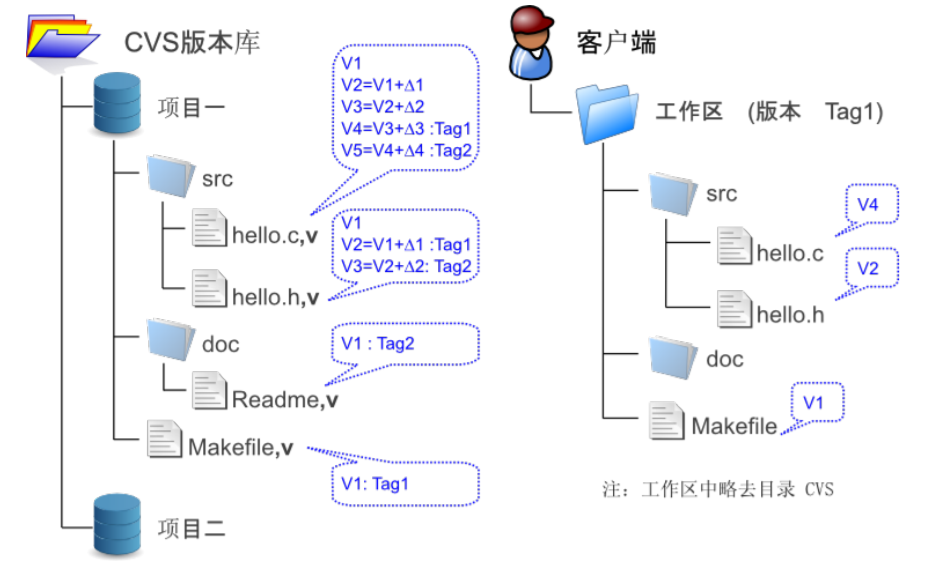

Git
第一章 绪论
1.1 版本控制工具
1.1.1 CVS（ Concurrent Versions System ）
- 封装了已有的针对单一文件的多版本管理工具 RCS
- 基于 C/S 架构。版本库位于服务器端，是一个 RCS 文件容器
- RCS 文件以
,v为 后缀，用于保存对应文件的历次更改历史 - RCS 文件中只保留一个版本的完全拷贝，其他历次更改仅存储差异
- RCS 文件的命名直接影响工作区检出的文件名
- 最早提出了提交（ Commit ）、检入（ Checkin ）、检出（ Checkout ）、里程碑（ Tag ）、分支（ Branch ）等概念

1.1.2 SVN（ Subversion ）
- 后端存储从一开始的 BDB （简单的关系型数据库）转变到 FSFS （文件数据库）
- 每一次提交，都会在服务器端的
:file:db/revs和:file:db/revprops目录下各创建一个以 顺序数字编号 命名的文件:file:db/revs下的变更集文件：记录与上一个提交之间的差异，字母 A 表示新增， M 表示修改， D 表示删除:file:db/revprops下的同名文件：保存着提交日志、作者、提交时间等版本属性
- 拥有全局版本号。每提交一次， SVN 的版本号就会自动加一
- 实现原子提交。部分文件提交失败不影响其他文件的提交
- 文件名不受服务器操作系统的字符集及大小写的限制。支持重名的文件和目录
- 轻量级拷贝，操作类似于创建符号链接，仅需在
:file:db/revs下的变更 集文件中用特定语法标注，可在不同的名字空间下创建不同的目录以实现里程碑和分支的创建 - 集中式版本控制
1.1.3 Git
- 分布式版本控制。每个人都工作在通过克隆操作建立的本地版本库中
- 几乎所有操作包括查看提交日志、提交、创建里程碑和分支、合并分支、回退等都直接在本地完成而不需要网络连接
- 安全性强。重要操作使用 SHA1 哈希值
1.2 Git 的优点
-
数据备份
- 提交到本地仓库
$ git add -u # 如果创建了新文件，可以执行 git add -i 命令。 $ git commit
- 推送到公司的仓库
$ git push
-
自动同步到外网 Git 服务器的镜像
mirror 版本库只读。

- 提交到本地仓库
-
异地协同工作
- 从镜像版本库同步数据到本地
$ git pull mirror master
- 提交到另一个远程版本库
$ git push home
- 从远程版本库同步数据到公司电脑
$ git pull home master
- 其他同事拉取或推送数据
$ git pull $ git push

- 从镜像版本库同步数据到本地
-
现场版本控制
在客户现场或在产品部署的现场，进行源代码的修改，并进行版本控制，以便在完成修改后能够将修改结果甚至修改过程一并带走，且能将修改结果合并至项目对应的代码库中。
- 在需要版本控制的目录下初始化
$ git init
- 添加文件并提交
$ git add -A $ git commit -m "initialized"
- 为初始提交建立一个里程碑 v1
$ git tag v1
- 在工作区中修改文件，提交
$ git commit -a
-
从v1开始的历次提交逐一导出为补丁文件
转换的补丁文件都包含一个数字前缀，并提取提交日志信息作为文件名，支持二进制文件。
$ git format-patch v1..HEAD 0001-Fix-typo-help-to-help.patch 0002-Add-I18N-support.patch 0003-Translate-for-Chinese.patch
-
通过邮件等方式将补丁文件发出
$ git send-email *.patch
- 在需要版本控制的目录下初始化
-
避免引入辅助目录
防止目录下的文件列表的暴露，以及辅助目录下文件原始拷贝所带来的效率折损。
-
重写提交说明
- 进入提交说明编辑界面
$ git commit --amend
- 修改某个历史提交的说明（变基操作）
$ git rebase -i <commit-id>^
- 进入提交说明编辑界面
-
提交撤回
- 删除提交中引入的大文件
$ git rm --cached <del-filename> $ git commit --amend
- 变基操作
- 删除提交中引入的大文件
-
提交列表
一个提交完成一件事。 Git 通过 提交暂存区 实现对提交内容的定制。
-
将修改内容加入提交暂存区
$ git add # 所有修改过的文件 $ git add -u # 本地删除文件和新增文件 $ git add -A # 一个文件内的部分修改内容 $ git add -p
-
暂存区中的文件可以再次修改，再次
add才提交因此一个修改的文件可以拥有两个版本，在提交暂存区中有一个版本，在工作区中有另外一个版本。
-
将登记在暂存区中的内容提交到本地仓库
$ git commit
-
提交允许多次撤销
-
-
差异比较
$ git diff # 缓存区中文件的修改 $ git diff --cached
-
工作进度保存
- 保存当前工作进度，并切换到新分支
$ git stash $ git checkout <new_branch>
- 切换回原分支，并恢复工作进度
$ git checkout <orignal_branch> $ git stash pop
- 保存当前工作进度，并切换到新分支
-
分页器
-
多数 Git 命令自带分页器，翻屏时使用了 vim 风格的热键
按键 说明 q退出分页器 h分页器帮助 space/b上翻 / 下翻一页 d/u上翻 / 下翻半页 j/u上翻 / 下翻一行 left/right左 / 右滚动 /pattern/?pattern向下 / 上寻找和 pattern 匹配的内容 n/N向前 / 后继续寻找 g/G/<num> g跳到首行 / 末行 / 对应行 !<command>以执行 Shell 命令 -
部分 Git 命令默认未提供分页器
以
git status为例。# temporarily $ git -p status $ git -paginate status # permanently $ git config --global pager.status true
-
自动折行
# method 1 $ export LESS=FRX # method 2 $ git config --global core.pager 'less -+$LESS -FRX'
-
1.3 安装
1.3.1 Linux
-
包管理器方式
版本可能不是最新，
git与git-core名称混用。包 说明 git核心包 git-svn、git-email、gitkGit 软件包的一部分，因依赖不同而单独作为软件包发布 git-docGit 的 HTML 格式文档。
通过$ git help -w <sub-command>打开相关子命令的 HTML 帮助# Ubuntu 10.10(maverick)+, Debian(squeeze)+ $ sudo aptitude install git $ sudo aptitude install git-doc git-svn git-email gitk # Ubuntu 10.04(lucid)-, Debian(lenny)- $ sudo aptitude install git-core $ sudo aptitude install git-doc git-svn git-email gitk # RHEL, Fedora, CentOS $ yum install git $ yum install git-svn git-email gitk
-
源码方式
- 从 Git 官网下载源码包
- 解压并进入相应目录
$ tar -jxvf git-1.7.3.5.tar.bz2 $ cd git-1.7.3.5/
-
加入环境变量
详细安装方法写在
INSTALL文件中。$ make prefix=/usr/local all $ sudo make prefix=/usr/local install
-
安装 Git 文档
编译文档依赖
asciidoc。$ make prefix=/usr/local doc info $ sudo make prefix=/usr/local install install-doc install-html install-info
-
Git 版本库方式
用于 Git 的更新。
-
克隆 Git 版本库到本地
$ git clone git://git.kernel.org/pub/scm/git/git.git $ cd git
-
在工作区中更新
$ git pull
-
清理工作
$ git clean -fdx $ git reset --hard
-
从里程碑中选择最新的版本
$ git tag ... v1.7.3.5
-
检出该版本的代码
$ git checkout v1.7.3.5
-
执行安装
$ make prefix=/usr/local all doc info $ sudo make prefix=/usr/local install install-doc install-html install-info
-
批量安装不同版本的脚本
#!/bin/sh for ver in \ v1.5.0 \ v1.7.3.5 \ v1.7.4-rc1 \ ; do echo "Begin install Git $ver."; git reset --hard git clean -fdx git checkout $ver || exit 1 make prefix=/opt/git/$ver all && \ sudo make prefix=/opt/git/$ver install || exit 1 echo "Installed Git $ver." done
-
-
命令补齐
源码方式安装 Git ，需要配置命令补齐。
-
将Git源码包中的命令补齐脚本复制到
:file:bash-completion对应的目录中$ cp contrib/completion/git-completion.bash /etc/bash_completion.d/
-
重新加载自动补齐脚本
$ . /etc/bash_completion
-
自动加载脚本
在本地配置文件
:file:~/.bash_profile或全局文件:file:/etc/bashrc中添加：if [ -f /etc/bash_completion ]; then . /etc/bash_completion fi
-
-
中文支持
-
UTF-8
提交说明、提交历史、文件名、里程碑中都可以正常显示中文。
如出现乱码，则可以通过以下命令解决。
$ git config --global core.quotepath false
-
GBK
$ git config --global i18n.logOutputEncoding gbk $ git config --global i18n.commitEncoding gbk
-
1.3.2 Mac OS
-
二进制发布包方式
从 git-osx-installer 官网下载
leopard.dmg安装包。点击
.dmg将其挂载到 Finder 中，并打开。点击.pkg开始安装。完毕后， Git 被安装到
file:/usr/local/git/bin/目录下。重启终端。 -
Xcode 方式
从商店安装 Xcode 。
查看安装路径。
$ xcode-select --print-path /Applications/Xcode.app/Contents/Developer
调用在 Xcode 路径中的 Git 工具。
$ xcrun git --version
在终端下运行 Git 。
$ cat /etc/paths.d/xcode /Applications/Xcode.app/Contents/Developer/Toolchains/XcodeDefault.xctoolchain/usr/bin /Applications/Xcode.app/Contents/Developer/usr/bin
-
Homebrew 方式
安装 Homebrew 。
$ ruby -e "$(curl -fsSL https://gist.github.com/raw/323731/install_homebrew.rb)"
Homebrew 目录位于
:file:/usr/local/bin/brew。 Homebrew 支持的软件的安装指引文件位于:file:/usr/local/Library/Formula/。安装 Git 。
$ brew install git
Git 目录位于
:file:/usr/local/Cellar/git/1.7.3.5。查看某个软件包安装的详细路径和安装内容。
$ brew list git /usr/local/Cellar/git/1.7.3.5/bin/gitk ...
-
源码方式 可以安装历史版本或者未发布版本。
$ brew install asciidoc $ brew install docbook2x $ brew install xmlto $ make prefix=/usr/local all doc info $ sudo make prefix=/usr/local install install-doc install-html install-info
-
命令补齐
安装 bash-completion 软件包。
$ brew search completion $ brew install bash-completion
在
file:~/.bash_profile文件中追加：if [ -f $(brew --prefix)/etc/bash_completion ]; then . $(brew --prefix)/etc/bash_completion fi在当前 shell 加载命令补齐
. $(brew --prefix)/etc/bash_completion
-
其他辅助工具的安装
软件包 说明 gnupg 数字签名和加密工具。在为 Git 版本库建立签名里程碑时会用到 md5sha1sum 生成 MD5 或 SHA1 摘要。在研究 Git 版本库中的对象过程中会用到 cvs2svn CVS 版本库迁移到 SVN 或 Git 的工具。在版本库迁移时会用到 stgit Git 的补丁和提交管理工具 quilt 一种补丁管理工具。在介绍 Topgit 时用到 gitx 更强大的图形工具
1.3.3 Windows
.exe安装。
第二章 基础操作
2.1 初始化
2.1.1 环境变量设置
# 用户名和邮箱 $ git config --global user.name <uname> $ git config --global user.email <email> # 本用户添加 Git 命令别名 $ git config --global alias.st status $ git config --global alias.ci "commit -s" # 管理员让所有用户可以使用别名 $ sudo git config --system alias.br branch
2.1.2 创建版本库
-
初始化
# 初始化版本库，并生成工作区目录 $ git init <projname>
以下假定工作区为
demo。工作区的
.git目录即版本库（仓库）。在工作区中执行git命令时，会逐级向上查找.git版本库。版本库可以异地克隆，因此不用担心会被破坏。
-
创建文件并提交到版本库
# 创建文件 $ echo "Hello." > welcome.txt # 添加到暂存区 $ git add welcome.txt # 提交到本地版本库（附上提交说明） $ git commit -m "test" # 提交到本地版本库（进入编辑模式） $ git commit # 提交结果 [master (root-commit) 0f2860c] test 1 file changed, 1 insertion(+) create mode 100644 welcome.txt
Note
结果信息：
- 当前分支：
master - 首次提交：
root-commit根提交 - 提交 ID ：
0f2860c - 提交说明：
test - 一个文件修改：
1 file changed - 一行插入：
insertion(+)
commit 参数 说明 -m <brief>提交时附加说明 -s在提交说明中自动添加上提交者姓名、邮件地址等签名标识 -a对本地所有变更的文件执行提交操作。不推荐使用 --allow-empty允许暂存区文件在没有任何修改的情况下进行空白提交 --amend对上次提交进行修正（在改正用户信息等错误后执行），不会产生另外的新提交 --reset-author重置提交者的 ID 通过
$ git log查看提交历史。 - 当前分支：
2.1.3 详细说明
-
查看版本库和工作区位置
# 版本库绝对路径 $ git rev-parse --git-dir # 工作区绝对路径 $ git rev-parse --show-toplevel # 当前目录相对于工作区根目录的相对路径 $ git rev-parse --show-prefix # 当前目录到根目录的深度 $ git rev-parse --show-cdup
-
配置文件
类型 优先级 路径 编辑命令 版本库配置文件 高 workspace/.git/config$ git config -e全局配置文件 中 /home/user1/.gitconfig$ git config -e --global系统配置文件 低 /etc/gitconfig,/usr/local/etc/gitconfig$ git config -e --systemTip
Windows 下：
- 全局配置文件：
C:/Users/Administrator/gitconfig - 系统配置文件：
Git/etc/gitconfig
# 读取或设置某节下某个键的值 $ git config user.name [jacq] # 读取或设置指定路径的 .ini 文件（如无则创建）的键 $ GIT_CONFIG=test.ini git config a.b ["hello, world"] # 删除某个键值对 $ git config --unset user.name
- 全局配置文件：
2.2 暂存区
通过 $ git status 查看文件状态，参数 -s 进入精简模式。
| 结果 | 说明 |
|---|---|
_M a.txt |
（第一列空格）工作区的文件处于中间状态，即修改后未加入暂存区 |
M a.txt |
版本库中的文件和处于中间状态，即加入暂存区后未提交 |
MM a.txt |
处于两种情形下，即加入暂存区后，再次修改但没有再次加入暂存区 |
暂存区（ Stage / Index ）位于 .git/index ，是一个包含文件索引的目录树，类似一个虚拟的工作区，记录了文件名、文件的状态信息（时间戳、文件长度等）。
文件的内容保存在 Git 对象库 .git/objects目录中，文件索引建立了文件和对象库中对象实体之间的对应。
Git 通过扫描 index 文件的大小和时间戳，可以快速判断工作区中的文件是否发生变更。

# 工作区修改的文件内容被写入到对象库中的一个新的对象中，而该对象的ID被记录在 index 中 $ git add <file> # 暂存区的目录树写到对象库中， master 分支会做相应的更新 $ git commit # 暂存区的目录树被 master 分支指向的目录树所替换，但是工作区不受影响 $ git reset HEAD # 接从暂存区删除文件，工作区不受影响 $ git rm --cached <file> # 用暂存区全部或指定的文件来替换工作区的文件 $ git checkout . $ git checkout -- <file> # 会用 HEAD 指向的 master 分支中的全部或者部分文件替换暂存区及工作区中的文件 git checkout HEAD . git checkout HEAD <file> # 清除工作区中未加入版本库的内容（未被追踪） $ git clean -fd # HEAD（版本库中当前提交）指向的目录树，'-l' 表示显示字节长度 $ git ls-tree -l HEAD # 缓存区目录树 $ git ls-files -s # 缓存区写入对象库后，查看指定 ID 的目录树， ID 可缩写 $ git write-tree 9431f4a3f3e1504e03659406faa9529f83cd56f8 $ git ls-tree -l 9431f4a 040000 tree 53583ee687fbb2e913d18d508aefd512465b2092 - a 100644 blob 51dbfd25a804c30e9d8dc441740452534de8264b 34 welcome.txt # 递归显示每课目录树 $ git write-tree | xargs git ls-tree -l -r -t
2.3 diff 命令
# 工作区和暂存区比较 $ git diff # 暂存区和 HEAD 比较 $ git diff --cached # 工作区和 HEAD 比较 $ git diff HEAD
2.4 Git 对象
-
对象内容
有三种类型的对象：提交（ commit ）、目录树（ tree ）、文件（ blob ）。
# 查看最近一条提交对象。'--pretty=raw' 可以观察父属性 $ git log -1 --pretty=raw commit e695606fc5e31b2ff9038a48a3d363f4c21a3d86 tree f58da9a820e3fd9d84ab2ca2f1b467ac265038f9 parent a0c641e92b10d8bcca1ed1bf84ca80340fdefee6 # 查看各个对象的关联树 $ git log --pretty=raw --graph e695606f
字段值 说明 类型 commit 本次提交的唯一标识 commit tree 本次提交所对应的目录树 tree parent 上一次提交 commit ID 是 SHA1 散列值，前 2 位作为目录名，后 48 位作为文件名。
commit ID = sha1(“commit objSize\000”+ objContent ) file ID = sha1(“blob objSize\0000”+ objContent) tree ID = sha1(“tree objSize\0000”+ objContent)
# 查看 HEAD 对应的提交的内容 $ git cat-file commit HEAD tree f58da9a820e3fd9d84ab2ca2f1b467ac265038f9 parent a0c641e92b10d8bcca1ed1bf84ca80340fdefee6 xxx # 提交信息的长度 $ git cat-file commit HEAD | wc -c 234 # 手动计算，与原 ID一致 $ ( printf "commit 234\000"; git cat-file commit HEAD ) | sha1sum e695606fc5e31b2ff9038a48a3d363f4c21a3d86
通过$ git cat-file <id>查看对象信息，需要参数：-t类型，-p内容。$ git cat-file f58da # tree 的内容 100644 blob 7e12803b85898fd0ae42d0a793c3eaf9f0cdd66e 28 t.ini 100644 blob ee4d1e3b8e89a09e2f15df442a9113aefd5c0858 38 welcome.txt
对象保存在
.git/objects目录下。
-
HEAD
通过
$ git branch显示和管理分支。# '*' 表示当前工作分支 $ git branch * master
.git/HEAD指向.git/refs/heads/master，而 master 指向最新提交的 ID 。.git/refs是保存引用的命名空间，其中.git/refs/heads目录下的引用又称为分支。分支可以长格式表示，如/refs/heads/master；也可以用短格式表示，如master。# 查看引用对应的提交 ID $ git rev-parse master e695606fc5e31b2ff9038a48a3d363f4c21a3d86 $ git rev-parse refs/heads/master e695606fc5e31b2ff9038a48a3d363f4c21a3d86 $ git rev-parse HEAD e695606fc5e31b2ff9038a48a3d363f4c21a3d86
-
ID 的使用
-
^表示父提交，可以链式使用$ git rev-parse HEAD^ $ git rev-parse HEAD^^
-
^<n>表示多个父提交中的某一个，从 1 开始a573106^2
-
-
~<n>表示第几代祖先提交a573106~5 a573106^^^^^
-
{tree}表示提交对应的树a573106{tree} -
:<file>表示某次提交指定路径下的文件对象a573106:a/hello.txt # 暂存区中的文件对象 :a/hello.txt
2.5 Git 重置
使用 $ git log --graph --oneline 查看提交历史，显示更短的 ID 。
$ git log --graph --oneline * e695606 which version checked in? * a0c641e who does commit? * 9e8a761 initialized.
-
重置到某次提交
# 上一次 $ git reset --hard HEAD^ # 上上次 $ git reset --hard HEAD^^ # 最早一次 $ git reset --hard 9e8a761
使用
--hard参数，会破坏工作区未提交的改动。 -
挽回错误重置
# 默认提供分支日志功能 $ git config core.logallrefupdates true # 显示最近 5 条 master 变更记录，最新的在最前，只显示每次改变的最终哈希值 $ git reflog show master | head -5 9e8a761 master@{0}: 9e8a761: updating HEAD e695606 master@{1}: HEAD^: updating HEAD 4902dc3 master@{2}: commit: does master follow this new commit? e695606 master@{3}: commit: which version checked in? a0c641e master@{4}: commit (amend): who does commit? # 重置 _master_ 为两次改变之前的值 $ git reset --hard master@{2}